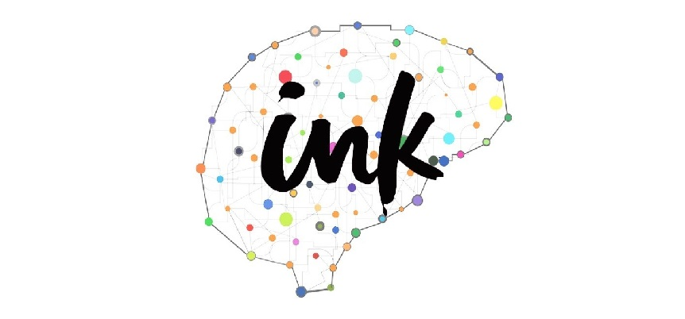
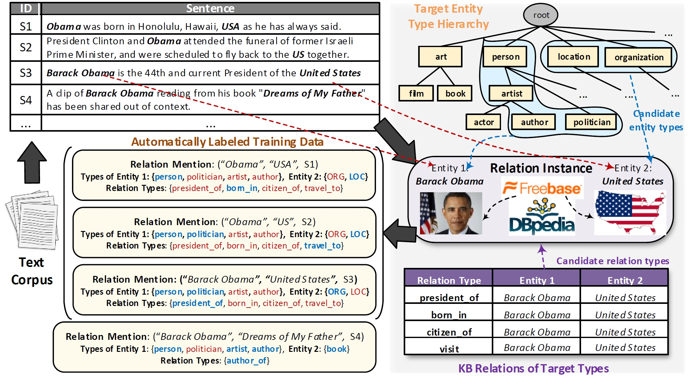
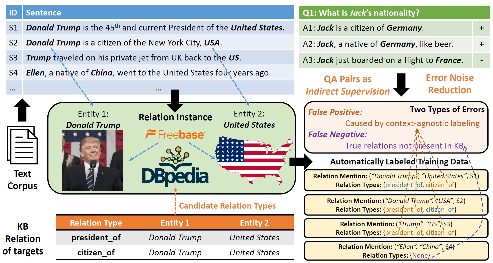

KagNet: Knowledge-Aware Graph Networks for Commonsense Reasoning
An implementation of the proposed KagNet model for commonsense reasoning (EMNLP-IJCNLP 2019).
CPL: Collaborative Policy Learning for Open Knowledge Graph Reasoning
TensorFlow implementation of EMNLP 2019 paper Collaborative Policy Learning for Open Knowledge Graph Reasoning. Moving to PyTorch.
HiExpl: Hierarchical explanations of neural sequence model predictions
Pytorch implementation of "Towards Hierarchical Importance Attribution: Explaining Compositional Semantics for Neural Sequence Models".
Recurrent Event Network: Global Structure Inference over Temporal Knowledge Graph
Pytorch implementation for Recurrent Event Network: Global Structure Inference over Temporal Knowledge Graph (ICLR-RLGM 2019), which is an autoregressive model to infer graph structures at unobserved times on temporal knowledge graphs (extrapolation problem).
AlpacaTag: Active Learning-based Tagging Framework.
AlpacaTag is an open-source web-based data annotation framework for sequence tagging tasks, such as named-entity recognition (NER).

DS-RelationExtraction: Distantly-supervised Relation Extraction with Knowledge Bases
This repository puts together recent models and data sets for sentence-level relation extraction using knowledge bases (i.e., distant supervision). In particular, it contains the source code for WWW'17 paper CoType: Joint Extraction of Typed Entities and Relations with Knowledge Bases. Task: Given a text corpus with entity mentions detected and heuristically labeled using distant supervision, the task aims to identify relation types/labels between a pair of entity mentions based on the sentence context where they co-occur.
